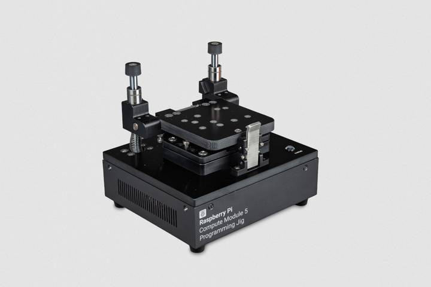

The Compute Module 5 Programming Jig is a provisioning system that programs one Compute Module 5 (CM5) at a time with an operating system (OS) and security configuration. The jig connects directly with each CM5, eliminating the need for a separate IO board during provisioning.
The jig runs Secure Boot Provisioner (lum-sb-provisioner) to automate the provisioning workflow. When you insert and secure a CM5 into the jig, the jig automatically performs all configuration steps, including secure boot implementation, full-disk encryption, and operating system installation.

Figure 1. The Compute Module 5 Programming Jig
Related topic: